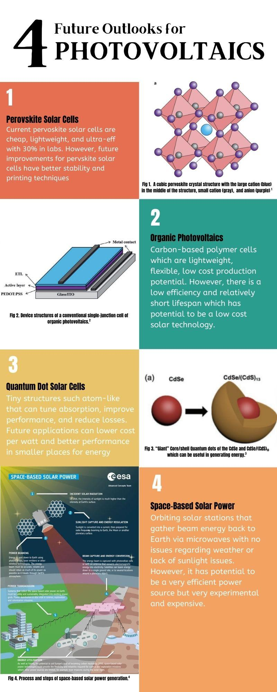
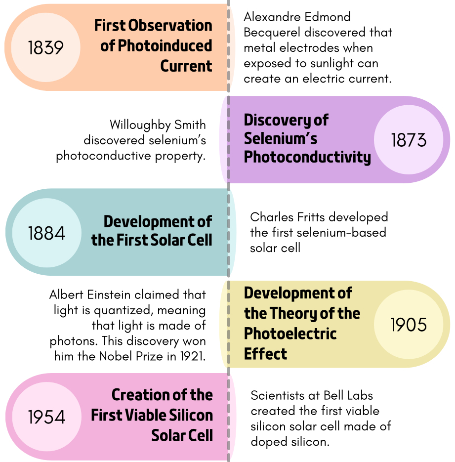
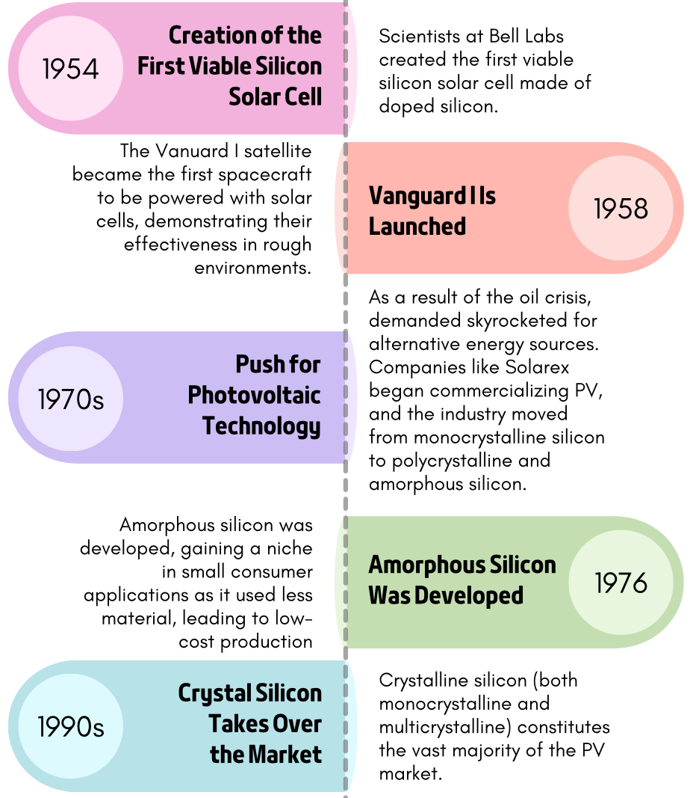

Energy & Sustainability
Photovoltaics: Past, Present & Future

Project overview
Fact-checking AI on 200 years of solar.
For our ME306 semester report, I tested how well ChatGPT, Claude, and DeepSeek explain the history of photovoltaics, checked their answers against scholarly sources, and designed the report's infographic on where solar is heading.
The report covered four areas: the history of PV, the materials used today, their economic, environmental, and social impacts, and the future of the technology. I did the LLM research and analysis for the history section. I prompted each model about how PV developed, why it matters, and which materials were used early on. We then compared the answers with the team's literature review, from Becquerel's 1839 photoinduced current to Bell Labs' 6% silicon cell in 1954 and silicon's hold on about 86% of the market by the late 1990s.
The models agreed on the broad story but differed on the details. DeepSeek gave the most complete and accurate account, especially on early materials. ChatGPT left out Einstein's photoelectric effect and credited the 1954 Bell Labs cell to Theodore Maiman. None of the models reported market statistics or the social effects of rooftop solar, such as the energy-saving habits owners pick up (the “meter effect”). I also found that prompt wording mattered: asking ChatGPT for a “brief summary” gave a noticeably thinner answer than the other models got.
Key work & outcomes
- Ran matched prompts on ChatGPT, Claude, and DeepSeek about PV history, importance, and early materials, and compared how much detail and accuracy each gave.
- Measured the models' claims against the literature review (Goetzberger, Lameirinhas, Haas, Artegiani) and flagged factual errors and gaps.
- Traced the material shift from Czochralski-grown monocrystalline silicon to polycrystalline and amorphous silicon, and on to CdTe and CIS thin films.
- Designed the “4 Future Outlooks for Photovoltaics” infographic on perovskite, organic, and quantum dot cells and space-based solar power, each with its main advantage and its limitation.
- Concluded that scholarly sources were more complete and reliable than the models, which gave accurate overviews but little data or context.
Report figures
From first cell to future outlooks
The timeline sets out the milestones I checked the models against, and my infographic closes the report.


Continue exploring